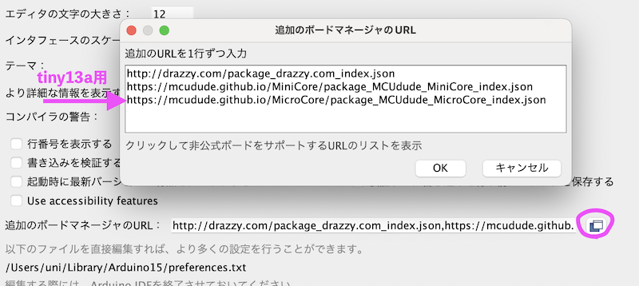
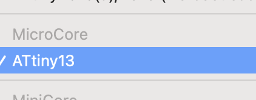
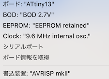
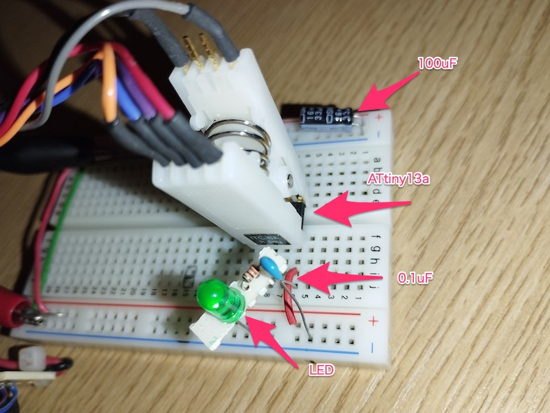

M1 Mac で ATtiny13a を使う
2023/03/19
M1 Mac こと Apple silicon のMacでAVRの書き込みができないかなあ？と調べた結果
上手くいきました。
LED点滅(Lチカ)を目標にします。
言語 : Arduino
対象マイコン : ATtiny13a
書き込み装置 : AVRISPmkII
環境設定
ATtinyシリーズ用ライブラリは ATTinyCore が有名だけど ATTinyCore では13aサポートされてない。
似たようなもので MicroCore が必要
GitHub - MCUdude/MicroCore: A light-weight Arduino hardware package for ATtiny13
インストール方法に従いボードマネージャに追加する。

選べるようになってる

回路図

コード
void setup() {
pinMode(2, OUTPUT);
}
void loop() {
digitalWrite(2, HIGH);
delay(500);
digitalWrite(2, LOW);
delay(500);
}
書き込み設定

秋月で買ったDIP-IC用クリップ使って書き込んでる。便利。

ISP繋げっぱなしのためには、パスコン100uFが必要だった。
つけないと高速点灯してしまう（バグってる感じ）